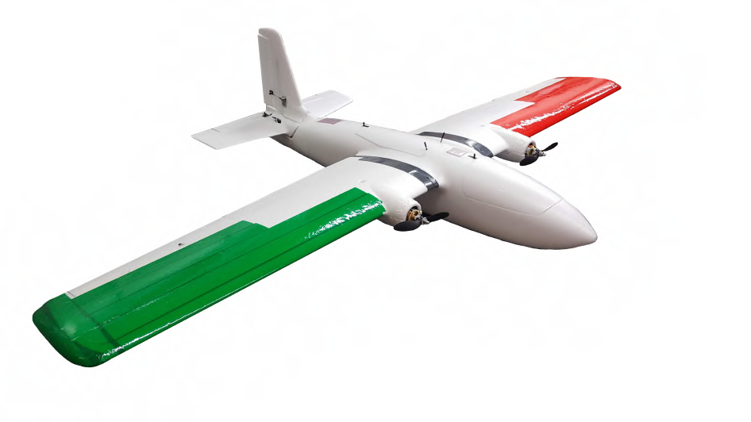

AUVSI-SUAS Unmanned Aircraft Competition
Undergraduate Capstone Project.

System-Level Technical Design Paper
For my final "Capstone" project of my undergraduate studies in Mechanical Engineering, I assumed the role of team captain on my school's competition team for the international AUVSI-SUAS unmanned aircraft competition. Due to the specialized nature and demands of the competition, admission to the team was through application and selection. Because of this, much of the top talent in the Mechanical, Electrical, and Computer Engineering departments was found on the team, united by a passion for controls, autonomy, and aviation.
For the competition, our challenge was to, over the span of 10 months, design and build an unmanned aircraft platform that could do the following:
- Take off, land, and fly waypoints on a miles-long flight path while avoiding static and dynamic obstacles without any human intervention.
- Search a large area for visual targets on the ground and capture images of the targets.
- Autonomously classify the letter, shape, and color of each visual target.
- Drop a payload from at least 100 feet up onto a goal location, preserving the structural integrity of the payload.
- Take mission-level commands from a ground station in real-time.
Our team, which consisted 12 members, was faced with the monumental task of designing, building, and documenting for future teams an interconnected system capable of accomplishing all competition requirements, which span the fields of computer science, path planning, computer vision, control theory, machine learning, aerospace design, electrical engineering, and robotics.
Although the subject matter and learning curves were daunting, we were also all very motivated and hard-working individuals. Each member of the team could be trusted to learn the requisite material and tools to accomplish everything that we needed to. As a matter of fact, as the months wore on, it became clear that the real challenge associated with the project was to keep the effort organized, focused, efficient, and well-engineered. So, although at first I focused most of my efforts on matters pertaining to the autopilot and the higher level path planning and estimation algorithms, my role gradually evolved to something much more similar to a high-level Systems Engineer.
Thus, what was unique about this project for me was that the sheer breadth of talent available to tackle the task allowed me to become focused less on low-level details and more on high-level project management principles from an engineering perspective. Instead of focusing exclusively on engineering the autonomy-related subsystems, I was able to take on the following roles:
- Working with representatives of sub-teams for the vision, payload, airframe, and control subsystems to ensure subsystem compatibility and refine the overall system design.
- Working with the different sub-teams to design the high-level algorithms for computer vision, controls, state estimation, and path planning.
- Working with sub-team representatives to establish goals and a timeline for the project to the date of the competition, refining and adapting when needed.
- Designing and overseeing testing procedures for software, hardware, and a combination of both to validate their performance and make sure they were on track to accomplish the competition goals.
- Leading in-field flight tests and analyzing collected data to improve the flight tracking performance.
- Helping individuals on the team to find their most promising areas for contributing to the effort in a way that was satisfying to them.
- Designing a framework for systematic team-wide documentation of the subsystem designs and testing efforts.
- Mentoring the controls/autonomy subteam in their efforts to climb the enormous learning curve.
While there were many challenges and idiosyncratic personalities to work with along the way, the competition effort was very stimulating and rewarding for everyone on the team. We ended with a system we were proud of--check it out in the technical design paper if you're interested--and performed very well at the competition, stacking up against schools who already had a storied history with the effort in past years. And although I love the work of the nitty gritty in engineering as much as anyone, I was especially grateful that my level of relevant experience afforded me the chance to focus on the more human elements of a large engineering undertaking in a leadership capacity. None of it would have been possible without my very talented teammates, and working in a capacity where I could try to help bring out the best in them ended up being what I enjoyed the most from this capstone project.